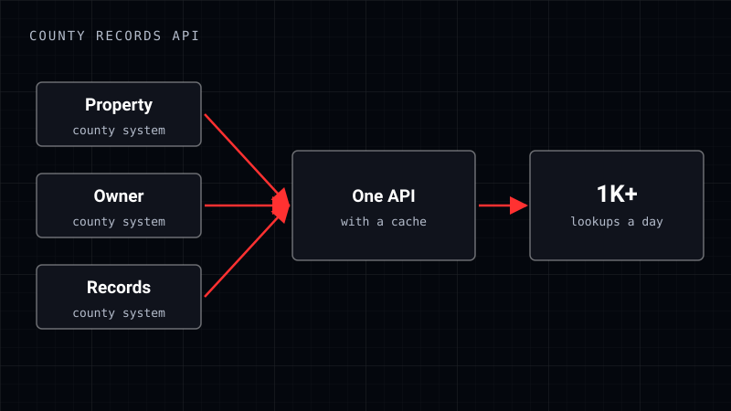

RION sub-project
County records API and client intake
One API in front of 3 county record systems, and client intake that runs on its own.
- Private repo

By the numbers
- 3county systems behind one API
- 1K+lookups a day, cached
- 70%faster onboarding
What I did
- Put 3 county record systems (property, owner and records) behind one API.
- Added caching for 1K+ lookups a day.
- Automated client intake end to end. Onboarding got 70% faster and duplicate entries stopped.